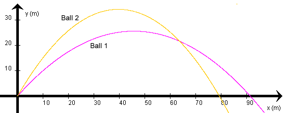

Yes, the time difference t1 - t2 between the arrival times of Balls 1 and 2 at the intersection point of their trajectories is -1.07 s.
This means that Ball 1, which has the lower trajectory, gets to the intersection point first. This is so because this ball has the greater horizontal component of velocity. The horizontal velocity components determine the answer.

Solution.
Plan It. The horizontal velocity components of the balls are constant and can be calculated from the given data. Both balls undergo the same horizontal displacement from the start to the intersection point. This displacement is given. Combined with the values of the horizontal velocity components, the two travel times and their difference can be calculated.
Set It Up and Solve It. The initial speeds and launch angles are given as
Ball 1: v1(0) = 30.0 m/s  q1(0) = 48.2o
q1(0) = 48.2o  (1)
(1)
Ball 2: v2(0) = 30.0 m/s  q2(0) = 60.0o
q2(0) = 60.0o  (2)
(2)
From these values one obtains for the constant x-components of velocity of the two balls:
vx1 = v1(0) cos q1(0) = 30.0 cos
48.2o = 20.0 m/s.  (3)
(3)
vx2 = v2(0)
cos q2(0) = 30.0
cos 60.0o = 15.0 m/s.  (4)
(4)
If the balls are launched at t = 0, the times t1 and t2 when the balls reach the intersection point are calculated from the definition of average velocity as applied to the present situation,
vx = (x - 0) / (t
- 0) = x / t .  (5)
(5)
Solving for the time this gives
t1 = x1 /
vx1 = 64.4 / 20 = 3.22 s  (6)
(6)
t2 = x2 /
vx2 = 64.4 / 15 = 4.29 s  (7)
(7)
Thus,
t1 - t2 = 3.22
- 4.29 = -1.07 s  (8)
(8)
Think About It. Since both balls have the same initial speed, the ball with the smaller launch angle must have the greater horizontal velocity component. This means it is moving faster horizontally and will cover any horizontal displacement in less time than the ball with the greater launch angle.